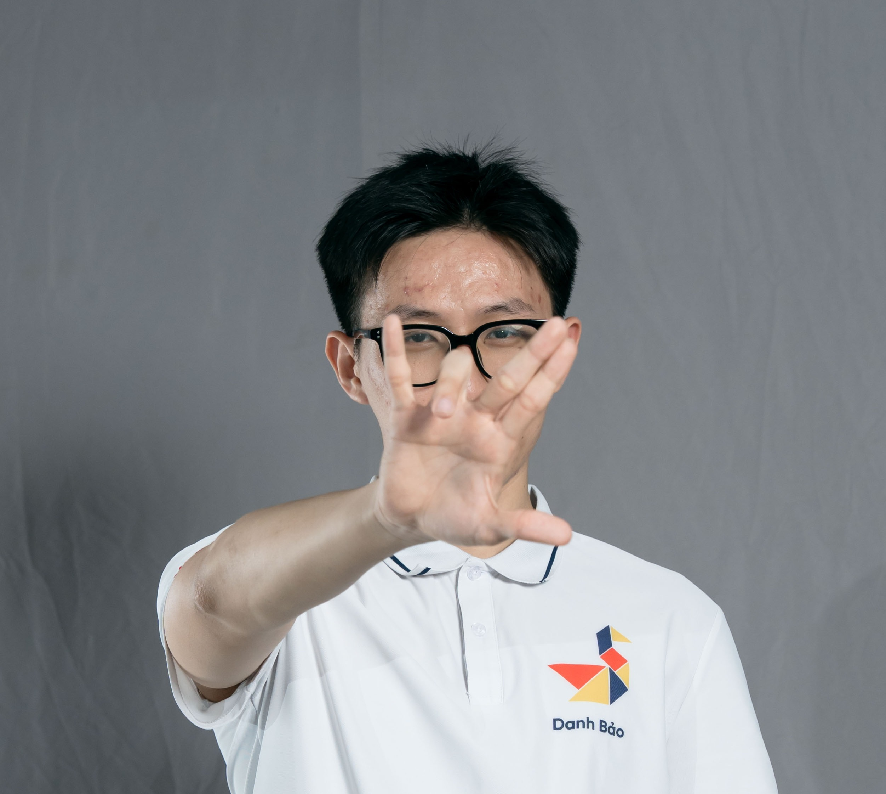

Undergraduate Student · Reinforcement Learning
I am an undergraduate student majoring in Data Science and AI at Hanoi University of Science and Technology (HUST). Currently, I am building a solid theoretical foundation in Machine Learning, with a strong interest in Reinforcement Learning (RL). As an aspiring researcher, I am focusing on expanding my core knowledge and exploring various dimensions of RL to define my future research direction.
I am currently a research student at the DSAI Lab, School of Information and Communications Technology (SoICT), HUST.
